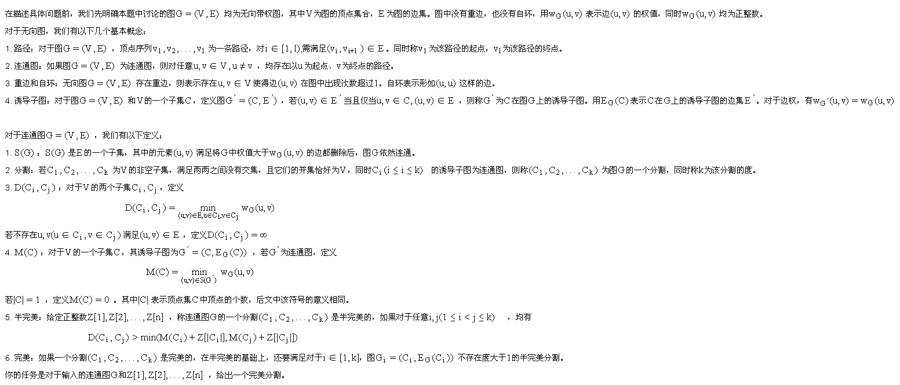
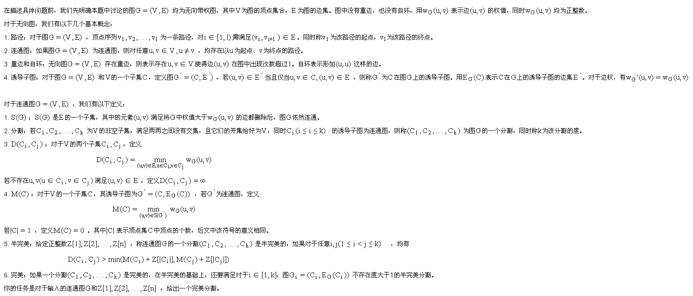

| F.A.Qs | Home | Discuss | ProblemSet | Status | Ranklist | Contest | 入门OJ | ModifyUser Xeonacid | Logout | 捐赠本站 |
|---|
| F.A.Qs | Home | Discuss | ProblemSet | Status | Ranklist | Contest | 入门OJ | ModifyUser Xeonacid | Logout | 捐赠本站 |
|---|

对于10%的数据，满足n=2
对于30%的数据，满足n≤10
对于60%的数据，满足n≤500,m≤2000
对于100%的数据，满足n≤100000,m≤500000